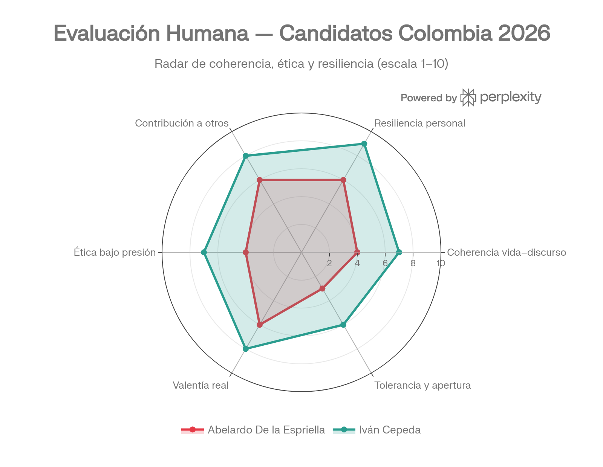

Más allá de las propuestas y los sondeos: coherencia de vida, ética bajo presión, resiliencia y contribución real a los demás. Un análisis de carácter.
El carácter de un líder se forma mucho antes de llegar a la campaña electoral. Estas son las historias que construyeron a estos dos hombres.
Nacido en Bogotá (1978), creció en Montería. Fundó su firma de abogados a los 24 años y construyó su reputación en el litigio penal mediático. Representó a víctimas emblemáticas como Natalia Ponce de León y Rosa Elvira Cely, pero también a clientes como Álex Saab, los primos Nule y parapolíticos. Su ascenso político se apoyó en las redes sociales y un discurso de "mano dura" anticorrupción. Reunió más de 4,6 millones de firmas ciudadanas para inscribirse como candidato independiente, ganando la primera vuelta presidencial.
Nacido en Bogotá (1962), vivió exiliado en Checoslovaquia y Cuba desde los 3 años. Regresó a Colombia, estudió filosofía en Bulgaria y en 1994 presenció el asesinato de su padre, el senador Manuel Cepeda, perpetrado por agentes del Estado y paramilitares. Fundó el MOVICE, fue facilitador del proceso de paz con las FARC y el ELN, y durante 13 años enfrentó judicialmente a Álvaro Uribe, quien fue condenado en 2025 por soborno de testigos. Su candidatura presidencial es respaldada por el Pacto Histórico.
Cada dimensión fue evaluada del 1 al 10 a partir de hechos documentados, decisiones públicas y trayectorias verificables — no encuestas de opinión.

La línea vertical sólida representa el promedio del candidato · La línea punteada gris es el punto medio (5/10)
| Dimensión | Criterio evaluado | Abelardo · 4.8 prom. | Cepeda · 7.5 prom. |
|---|---|---|---|
| Coherencia vida–discurso | ¿Lo que predica coincide con cómo ha vivido? | ||
| Resiliencia personal | ¿Cómo enfrentó las dificultades de su vida? | ||
| Contribución a otros | ¿Ha ayudado efectivamente a personas vulnerables? | ||
| Ética bajo presión | ¿Sus decisiones difíciles revelan integridad o conveniencia? | ||
| Valentía real | ¿Ha arriesgado algo real por sus convicciones? | ||
| Tolerancia y apertura | ¿Escucha y debate, o silencia al que piensa distinto? |
El verdadero carácter de una persona se revela cuando tiene algo que perder. Aquí examinamos cada dimensión con hechos documentados.
Esta es la dimensión más reveladora. Cepeda construyó su carrera pública alrededor de la lucha contra la impunidad y la defensa de víctimas, y sus decisiones vitales lo confirman: regresó del exilio para enfrentar el riesgo, y su confrontación con Uribe duró 13 años hasta la condena histórica por soborno. No cambió de posición cuando era inconveniente.
Abelardo presenta la tensión más evidente: prometió combatir a criminales y corruptos, pero construyó parte de su fortuna defendiéndolos. Representó a Álex Saab, a los primos Nule y a parapolíticos, no como defensor de oficio sino por elección libre y lucrativa. Esa brecha entre el discurso de "mano dura" y su trayectoria como abogado de los más poderosos corruptos del país es la gran incoherencia de su candidatura.
Cepeda enfrentó el genocidio de su movimiento político de niño, el asesinato de su padre de adulto, dos exilios, amenazas constantes y un proceso judicial de más de una década en su contra. Cada vez que tuvo que elegir entre seguridad y convicción, eligió convicción. Vivió en Praga, luego en La Habana (cuando los soviéticos invadieron Checoslovaquia), y regresó a Colombia a sabiendas del riesgo que implicaba. Eso es resiliencia forjada en el fuego real.
Abelardo no pasó por traumas existenciales equiparables, pero sí construyó una firma de abogados desde cero, trabajó en casos de altísima presión pública y levantó más de 4,6 millones de firmas como candidato independiente rechazando las consultas interpartidistas. Su reto fue más de ambición y construcción que de supervivencia. Construirse a sí mismo tiene mérito, pero no es lo mismo que enfrentar amenazas de muerte o la pérdida violenta de un ser querido.
Cepeda dedicó décadas, antes de entrar al Congreso, a trabajar con organizaciones de víctimas sin cargo público ni salario político. Fundó el MOVICE en 2003, fue facilitador en los procesos de paz con las FARC y el ELN, y su trabajo en derechos humanos le mereció el Premio Roger Baldwin de Human Rights First en 2007. Desde el Senado, sus debates destaparon parapolíticos y fueron reconocidos como referentes.
Abelardo tiene una cara real de contribución: los casos de Rosa Elvira Cely y Natalia Ponce de León son logros jurídicos que transformaron la legislación colombiana sobre feminicidio y ataques con ácido. Sin embargo, hay una disputa activa sobre el caso Cely — la familia negó que él haya sido el motor de la ley, y se reportó que la firma habría cobrado honorarios de la indemnización. Sus mayores ingresos vinieron de defender a los poderosos, no a las víctimas.
Cuando la columnista Ana Bejarano publicó un artículo sobre sus vínculos con Álex Saab, Abelardo no respondió con argumentos públicos: la demandó judicialmente. La FLIP señaló este caso como parte de un patrón de "acoso judicial" contra periodistas que investigaban su pasado. Usar el aparato judicial para intimidar a quienes te critican, mientras predicas libertad e institucionalidad, es una señal de alerta ética seria.
Cepeda actuó durante 13 años bajo presión extrema en el caso Uribe, siendo acusado públicamente de manipular testigos. Resistió sin retractarse, sin negociar silencio y sin atacar a jueces. Sus críticos legítimos señalan sus posiciones sobre algunos gobiernos latinoamericanos cuestionados, y el hecho de que su tío Saúl Castro fue condenado por corrupción. Pero en los momentos decisivos de su carrera, su comportamiento fue consistente.
Cepeda arriesgó literalmente la vida: dos exilios, amenazas documentadas, el asesinato de su padre en un contexto de exterminio político. Seguir en Colombia, volver del exilio, enfrentarse en juicio a uno de los hombres más poderosos del país durante 13 años — eso es valentía real con costos personales reales.
Abelardo tomó la decisión políticamente valiente de no entrar a consultas interpartidistas y apostar a la presidencia con firmas ciudadanas, lo cual implica riesgo estratégico real. Pero sus posiciones mediáticas y su perfil como "outsider" le han dado más de lo que le han quitado. La valentía de Abelardo es más retórica y estratégica; la de Cepeda fue existencial.
Ninguno de los dos destaca en esta dimensión, pero por razones distintas. Abelardo ha declarado abiertamente que rechaza debatir con candidatos cercanos al petrismo, y ha demandado o amenazado con demandar a múltiples periodistas que lo investigan. Eso no es tolerancia; es intolerancia con corbata legal.
Cepeda tiene un discurso de diálogo y paz, pero su campaña ha tenido pocos debates y escasas entrevistas abiertas. No es conocido por cambiar sus posiciones cuando recibe críticas. Su cercanía con el gobierno Petro y el apoyo al proceso de "Paz Total" le han generado cuestionamientos que suele responder desde la ideología más que desde la evidencia empírica.
Estas puntuaciones no significan que uno sea una persona perfecta ni el otro un villano. Significan que, cuando lees sus vidas completas, aparecen patrones.
Es un hombre construido en el litigio mediático, talentoso para comunicar y genuinamente comprometido en algunos casos de víctimas. Pero hay una fractura central: su discurso de autoridad y anticorrupción no puede separarse de una carrera donde los más grandes corruptos del país fueron sus clientes más rentables. Que hoy quiera ser el presidente que "los erradique" es una narrativa que la historia de su propio ejercicio profesional complica profundamente.
Es un hombre cuya vida entera fue moldeada por la pérdida y la persecución, y que eligió enfrentarlas desde la verdad y la institucionalidad. Su trayectoria es, en términos de coherencia personal, más difícil de cuestionar. Sus críticos legítimos señalan que su visión del rol del Estado en la economía replica esquemas que en otros países latinoamericanos han profundizado la pobreza en lugar de reducirla.
"El carácter se forma en las decisiones que nadie ve, en los momentos en que el costo de la integridad era más alto que el de la conveniencia. Y en esa dimensión, las trayectorias hablan por sí solas."
— Análisis basado en fuentes verificadas: BBC, El País, Caracol, CNN en Español, La Silla Vacía, FLIP, Infobae · Junio 2026